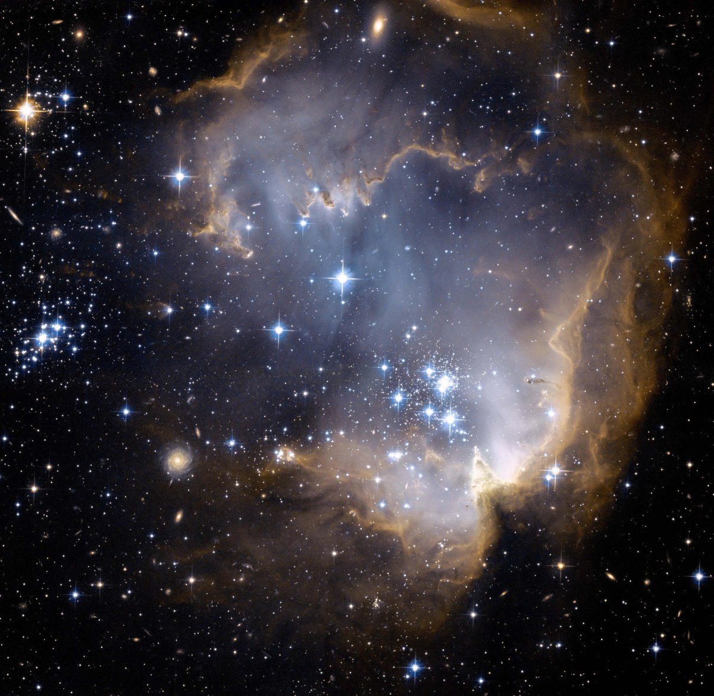
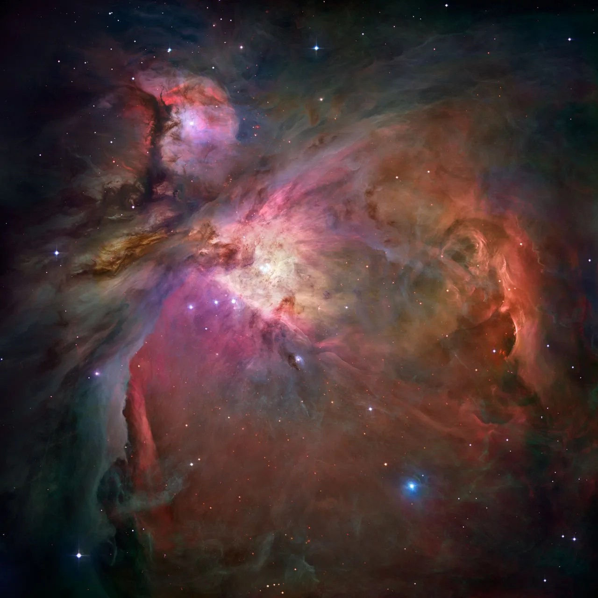
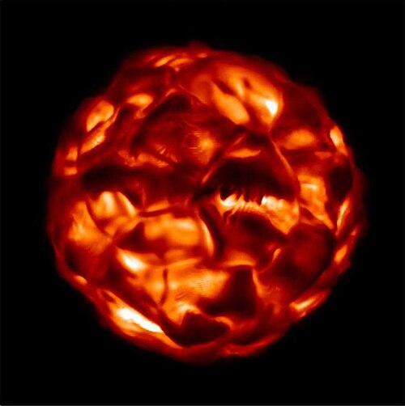
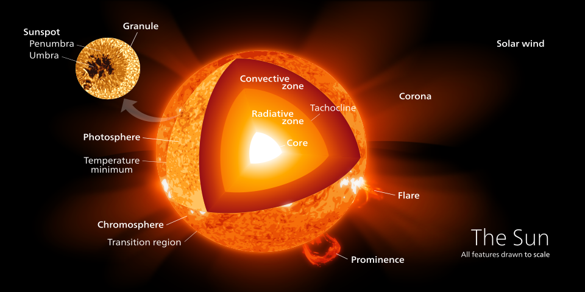
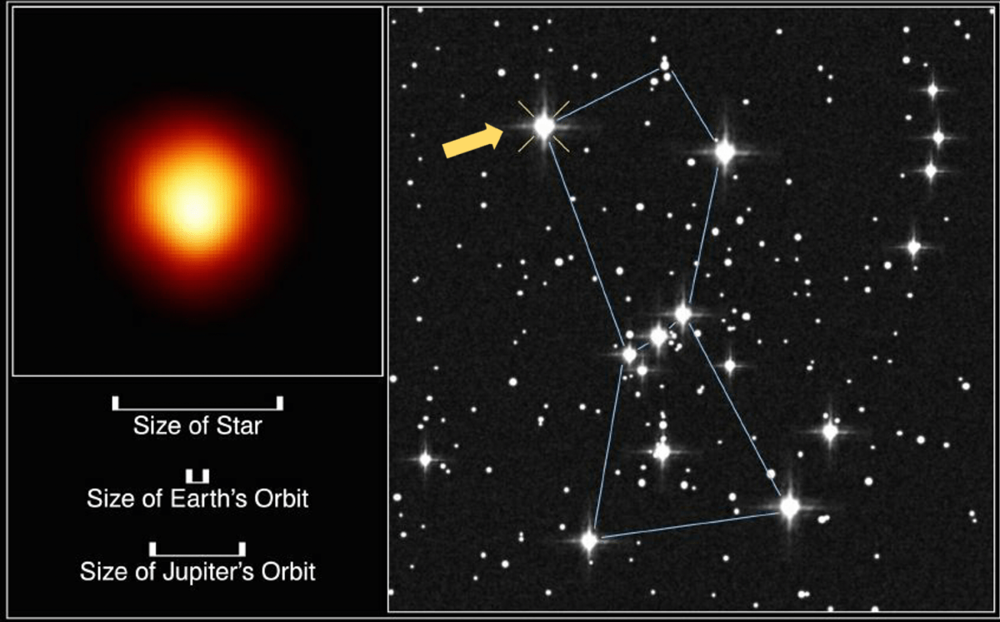

⚫ Birth of a Black Hole

If the remaining core is massive enough, gravity wins. The core collapses into a black hole where gravity becomes so strong that not even light can escape.

Every black hole begins as a massive star. Follow the incredible journey from a cloud of gas to one of the most mysterious objects in the universe.
📸 Image Credit: NASA Science

Every star is born inside a giant cloud of gas and dust called a nebula. Gravity slowly pulls the gas together until it forms a hot, glowing protostar.

When the core becomes hot enough, hydrogen atoms begin to fuse into helium. This process is called nuclear fusion. The star now shines brightly and produces enormous amounts of energy.

Fusion is the engine that powers every star. It creates light, heat, and all the energy a star releases into space.

Eventually the star runs out of hydrogen fuel. Without enough energy pushing outward, gravity begins crushing the core.
The outer layers explode in a brilliant supernova. For a short time, the explosion can outshine an entire galaxy.
If the remaining core is massive enough, gravity wins. The core collapses into a black hole where gravity becomes so strong that not even light can escape.
⭐ Massive stars live much shorter lives than small stars.
💥 A supernova can briefly shine brighter than billions of stars.
⚫ Every stellar black hole was once a massive star.
You've travelled toward a black hole. Now let's see how much you remember!
You've explored how massive stars can eventually become black holes.
Every black hole begins its journey as a massive star. Inside the star's core, nuclear fusion produces enormous amounts of energy that balances gravity. When the fuel is exhausted, gravity takes over. The star expands into a red supergiant, explodes as a spectacular supernova, and if the remaining core is massive enough, it collapses into a black hole. Understanding how black holes form helps us understand the life cycle of stars and the evolution of galaxies.
➡ Continue to Chapter 3• NASA Science – Images of nebulae, red supergiants, black holes and educational resources.
• NASA – Supernova animation/video.
• Wikipedia – Massive star illustration and Sun cross-section (used for educational purposes).